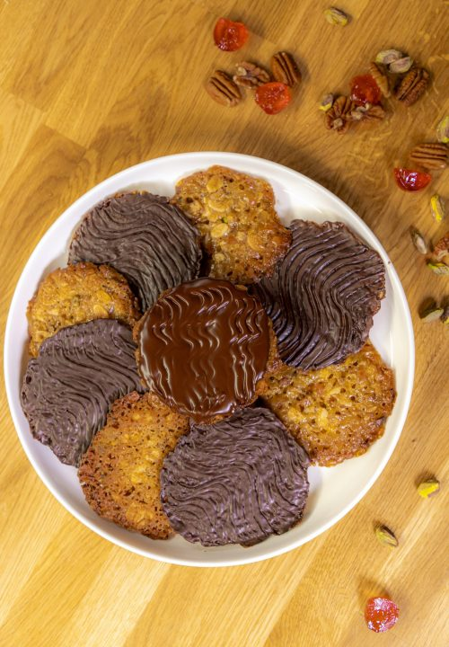

Chocolate & Ginger Florentines

Description
I love a Florentine – nutty, chewy and crunchy all at the same time and when covered in chocolate they’re pretty much the perfect biscuit. Traditionally eaten at Christmas I think they’re great any time of year. I’m using stem ginger because I love the gentle sweet-spice with the chocolate, but you can use the more typical mixed peel if you prefer.
Ingredients
50g butter
50g demerara sugar
50g golden syrup
50g plain flour
pinch of sea salt flakes
25g glace cherries or dried sour cherries
25g chopped stem ginger
55g flaked almonds
55g chopped nuts (I like to use pecans and pistachios)
zest of an orange
150g good quality dark chocolate
Step By Step
- Preheat the oven to 190C/170Cfan/gas 5. Line 2 baking sheets with parchment paper.
- Put the butter, sugar and syrup in a saucepan over a medium heat and cook until the butter has melted. Stir in the flour and cook for 1 minute, mixing well until combined. Remove from the heat and stir in the salt. Add all of the remaining ingredients, minus the chocolate. Stir until combined and then set aside to cool slightly.
- Take 10 tablespoons of the mixture, roll into balls flatten and place on the lined baking sheets, making sure you leave plenty of room for them to spread. Bake for 8-10 minutes until golden brown and then leave to cool in the tray a little before gently transferring to a wire rack to cool completely.
- Repeat with the remaining mixture.
- Melt the chocolate in the microwave in short bursts or melt in a heatproof bowl over a pan of simmering water. Turn the Florentines over and spoon the melted milk or dark chocolate over the base of each, gently spreading to the edges. Leave to cool slightly and then use a fork to mark a zig-zag pattern in the chocolate. Leave to set completely.